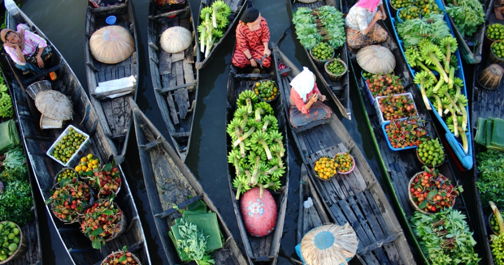

Taukah Kalian Indonesia Memiliki Tempat Wisata dan Kuliner yang Beragam?
Saat musim liburan tiba, banyak orang seringkali membuat rencana perjalanan ke luar negeri. Tapi, tahukah kamu sebenarnya wisata di Indonesia tak kalah keren dari tempat wisata di manca negara. Jalan-jalan ke luar negeri memang bukan hal yang salah untuk dilakukan karena keinginan masing-masing orang pastinya beragam. Namun, ketika apa yang ada di dalam negeri saja jauh lebih mempesona, untuk apa repot-repot pergi jauh dan menghabiskan budget banyak.
Wilayah Indonesia yang terbentang dari ujung barat hingga timur nyatanya menyajikan ragam pesona keindahan alam, budaya, tradisi, kuliner, dan hal-hal unik lainnya yang bisa dinikmati. Bisa dikatakan semua wilayah Indonesia adalah surga wisata baik wisata alam, wisata budaya, wisata sejarah, ataupun wisata kulinernya. Saat ini, berbagai pengembangan dan inovasi pun terus dilakukan terutama dari sektor persediaan akses transportasi serta fasilitas penunjang sehingga akan memudahkan bagi siapapun yang ingin berkunjung.
Banyak sekali keunikan yang tersaji di negara ini. Pesona alamnya yang menakjubkan mulai gunung, pantai, taman laut, air terjun, dan lainnya. Tradisi serta budaya dari masing-masing daerah yang begitu unik dan menarik. Menjelajahi ragam kuliner khas Indonesia pun nyatanya mampu memberikan pengalaman perjalanan tersendiri. Untuk menjelajahi nusantara pun kini bukan hal yang sulit lagi dilakukan karena sejumlah sarana transportasi pun mendapatkan pengembangan.
Bingung mau menikmati liburan kemana? Ayo, keliling dan menjelajah Indonesia, surga wisata khatulistiwa!